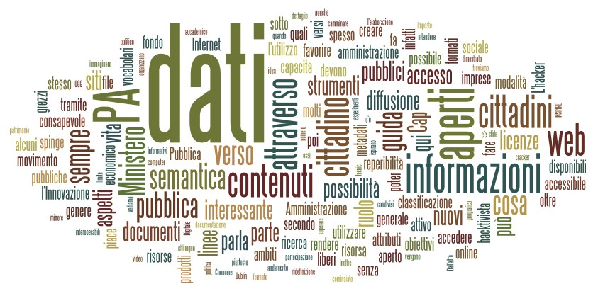

16 giugno, 2011 | di Pietro Blu Giandonato
 Oggi ho potuto seguire a Bari il seminario organizzato da DigitPA dal titolo “Il nuovo CAD: opportunità per i cittadini, adempimenti per le amministrazioni”.
Oggi ho potuto seguire a Bari il seminario organizzato da DigitPA dal titolo “Il nuovo CAD: opportunità per i cittadini, adempimenti per le amministrazioni”.
Fa parte di un ciclo di incontri nell’ambito del Programma Operativo di Assistenza Tecnica Società dell’Informazione (POAT-SI) con il quale si vogliono presentare le opportunità e gli obblighi insiti nel nuovo CAD.
E’ stato un interessante momento di confronto, durante il quale i circa 60 presenti, tra funzionari delle PA, operatori del settore dell’informazione e qualche curioso come me, hanno tempestato di domande e posto molti dubbi ai relatori.
Per quanto mi riguarda, dopo aver ascoltato la prima presentazione “Gli elementi fondamentali della riforma del CAD” di Elena Tabet (qui il PDF delle slide), ho fatto un intervento sottolineando che il Codice (artt. 52 e 68) di fatto parla di “formati aperti” come modalità di interscambio tra le amministrazioni pubbliche, trascurando la necessità – se non proprio obbligo – da parte della PA di rendere disponibili i propri dati, sempre in formati aperti, al pubblico.
Ho comunque spezzato una lancia a favore del MiPA, sottolineando come la definizione della IODL sia un ottimo passo avanti. Ma ho anche fatto notare come tra i gruppi di lavoro (vedi slide 28-34) che si occuperanno di elaborare le regole tecniche sulle numerose questioni annoverate dal CAD in seno a DigitPA, nessuno di fatto si occuperà di open data.
Mi è stato risposto che in effetti al momento non sono previste azioni che vadano a definire regole tecniche o tempi che le PA dovranno rispettare per aprire i dati al pubblico.
Ma proprio questa mancanza di fatto lascia la realizzazione dell’open government alla totale discrezione delle singole PA che lo hanno tra i propri obiettivi prioritari. Molto poche al momento, come abbiamo già accennato sempre qui su TANTO (Piemonte pionieri e Puglia in stand-by), e talvolta in maniera alquanto farraginosa, come racconta Gerlando Gibilaro in un suo approfonditissimo articolo, parlando della Regione Siciliana.
It’s a long way to the top if you wanna open data…

Posted in Eventi | 3 Comments »
24 maggio, 2011 | di Pietro Blu Giandonato
 La legislazione sul software aperto e libero (FOSS o FLOSS che dir si voglia) in Italia è piuttosto indietro, con un Disegno di Legge (il n. 1188) presentato nel lontano febbraio 2002 da un manipolo di senatori (primo firmatario Fiorello Cortiana dei Verdi) e da allora incagliato in esame alla 1a Commissione Affari Costituzionali. Ben otto anni dunque, e nulla lascia sperare che qualcosa possa cambiare.
La legislazione sul software aperto e libero (FOSS o FLOSS che dir si voglia) in Italia è piuttosto indietro, con un Disegno di Legge (il n. 1188) presentato nel lontano febbraio 2002 da un manipolo di senatori (primo firmatario Fiorello Cortiana dei Verdi) e da allora incagliato in esame alla 1a Commissione Affari Costituzionali. Ben otto anni dunque, e nulla lascia sperare che qualcosa possa cambiare.
In realtà, a livello governativo sono state avviate alcune azioni, ma che non hanno finora portato a risultati concreti. Sempre nel 2002 fu istituita con Decreto Ministeriale una apposita “Commissione per il software a codice sorgente aperto nella Pubblica Amministrazione” il cui lavoro portò alla pubblicazione di una “Indagine conoscitiva sul software open source“. Una successiva Direttiva del dicembre 2003 “Sviluppo ed utilizzazione dei programmi informatici da parte delle PA” sancì la possibilità da parte della Pubblica Amministrazione di acquisire ed utilizzare programmi informatici “open source”. Da febbraio a luglio 2004 fu attivo poi un gruppo di lavoro, volto a proseguire i lavori della c.d. “Commissione Meo” del 2002 e che di fatto produsse un documento finale con proposte articolate tra le quali l’istituzione di un “Centro di competenza OSS per la PA” contretizzatosi nel famigerato “Osservatorio sull’open source” nato in seno al CNIPA (oggi DigitPA). Esso raccoglie le esperienze delle Pubbliche Amministrazioni italiane nell’uso di software open source, come pure una sorta di elenco dei “fornitori” di servizi legati al FOSS, al quale chiunque può registrarsi. Di fatto, ad oggi l’Osservatorio appare né più né meno che un mero elenco di “esperienze” e “fornitori”, informazioni peraltro non più aggiornate dal 2007.
Insomma, buone le intenzioni, ma davvero scarsi i risultati, almeno finora. E se andassimo a fare due conti su quanto saranno costati Commissione, Gruppo di lavoro e Osservatorio stesso, forse ci morderemmo anche le mani in qualità di contribuenti…
Una iniziativa da segnalare è senza dubbio quella attuata dal Formez con la Italian Open Data Licence (IODL) v1.0, nata nell’ambito del progetto MiaPA, l’applicazione di “social check-in” per segnalare la performance degli uffici pubblici da parte dei cittadini. Formez auspica l’uso della IODL da parte delle amministrazioni pubbliche che vogliano imboccare concretamente un percorso di open government.
Un ulteriore riferimento legislativo di fondamentale importanza per tutto quanto concerne i dati digitali – e del quale le iniziative legislative regionali devono tenere conto – è costituito dal D.Lgs. 07/03/2005 n. 82 e s.m.i. il cosiddetto Codice dell’Amministrazione Digitale, che purtroppo però trascura totalmente proprio la materia degli open data.
Ottime notizie da alcune Regioni… e non solo
Svariate illuminate Regioni hanno comunque deciso già da anni di dotarsi di leggi proprie per favorire l’uso del software open source. L’Emilia-Romagna ha emanato la L.R. 11/2004, il Friuli Venezia Giulia la L.R. 8/2006, l’Umbria la L.R. 11/2006, il Veneto la L.R. 19/2008, il Piemonte la L.R. 9/2009 e la Toscana la L.R. 54/2009. La Lombardia ha in essere un progetto di legge presentato a luglio del 2010, così come la Sardegna ha un proprio disegno di legge in cantiere risalente a ottobre 2008. Recente poi è la notizia (grazie Antonio) che addirittura il Consiglio Comunale di Fabriano ha deciso di “abbracciare” il software open source, dimostrando che anche una piccola amministrazione locale è capace di grandi rivoluzioni a livello gestionale.
Come riferimento per aggiornamenti riguardo la normativa, sia nazionale che regionale, potete prendere certamente a riferimento l’Associazione per il software libero.
Anche il Presidente Vendola nella mia Puglia ha annunciato mesi fa la presentazione di un disegno di legge sul pluralismo informatico, teso a promuovere e diffondere il FLOSS (così definito nel DdL) a livello regionale. Si tratta di una iniziativa che apparentemente stride, e anche parecchio, con il precedente protocollo d’intesa firmato da Vendola con Microsoft verso fine 2010 per la costituzione di un centro di competenza per promuovere l’innovazione. Il Partito Pirata italiano e l’Associazione per il Software Libero hanno sin da subito contestato l’accordo, chiedendo a Vendola di rispondere ad una lettera aperta. Cosa che lui ha fatto, motivando dal suo punto di vista le ragioni dell’iniziativa. Interessante notare come la vicenda abbia destato molti interessi e dubbi anche all’estero.
Pur lasciando molto perplesso anche me, non voglio qui riprendere la discussione, già avviata nei contesti che vi ho segnalato. Sembra però che le critiche abbiano indotto Vendola a cercare di capirne un pò di più sulla questione. E’ infatti sempre di dicembre scorso la notizia riportata da Punto Informatico che Vendola abbia avuto un incontro con Richard Stallman, guru del software libero, per “fare un approfondimento con alcuni dei protagonisti più importanti della battaglia per il software libero” e addirittura abbia pensato di coinvolgerlo nella revisione proprio del DdL sul pluralismo informatico. Ad oggi però non sappiamo se l’incontro abbia avuto degli sviluppi di qualche tipo.
In Puglia si potrebbe osare di più…
Bene, con tali favorevoli presupposti e grande lungimiranza da parte di Vendola, mi viene spontaneo rilanciare e cogliere l’occasione per capire se a Nichi stia a cuore anche la grande questione riguardante i dati aperti.
Di open data se ne è parlato ampiamente, in varie forme e con illustri personaggi, anche durante il Festival dell’innovazione - ma soprattutto il contestuale Public Camp - entrambi organizzati proprio dalla Regione Puglia a Bari agli inizi di dicembre 2010.
Su TANTO seguiamo l’hype che ormai si è avviato sull’onda dell’open government e sugli open data da qualche tempo, e ovviamente come blogger cerchiamo non solo di far da volano a notizie e iniziative sul tema, ma anche di essere propositivi, con la realizzazione di mashup con dati aperti e liberi e la partecipazione diretta a eventi (ITN 2010 e il Gis Day 2010 di Palermo).

Ed è in quest’ottica che noi di TANTO vogliamo avanzare la proposta al Presidente Vendola e alla sua Giunta, di integrare il Disegno di Legge sul pluralismo informatico che stanno per presentare in Consiglio Regionale, con alcuni articoli che promuovano la diffusione di dati aperti e liberi nell’ambito dell’amministrazione regionale come pure in tutte le altre pubbliche amministrazioni pugliesi, dai Comuni alle Province. Penso ad esempio al grande valore aggiunto del quale potrebbero godere i cittadini con la diffusione in formato aperto e il libero utilizzo dei dati di monitoraggio delle componenti ambientali (aria, acqua, suolo) e dei grandi comparti come quello dei rifiuti. Del resto il Sistema Informativo Territoriale pugliese già consente da tempo lo scaricamento e la fruizione libera (sebbene manchi una chiara definizione della licenza d’uso) dei dati territoriali.
Perciò, qui di seguito proponiamo alcuni articoli da includere nel DdL sul pluralismo informatico, che riguardano proprio i dati aperti e liberi. Naturalmente si tratta di una proposta certamente perfettibile, ed è per questo che invitiamo tutti i nostri lettori e chiunque abbia interesse, ad avanzare proprie proposte per migliorarla. Il nostro obiettivo è quello di presentarle ufficialmente al Presidente Vendola, e se verranno mai accolte, la Regione Puglia sarebbe la prima a sancire legislativamente la diffusione di dati aperti e liberi. Il passo successivo sarebbe ovviamente quello di costruire un portale regionale, punto di riferimento istituzionale, analogamente a quanto fatto in maniera così lungimirante dalla Regione Piemonte con http://dati.piemonte.it
Il testo del DdL n. 5 del 10/02/2011 “Norme in materia di pluralismo informatico, sull’adozione e la diffusione del free libre open source software e open hardware e sulla portabilità dei documenti nella pubblica amministrazione regionale e locale” proposto dalla Giunta della Regione Puglia è reperibile sul sito web del Consiglio Regionale, nella sezione “Proposte di Legge” con Atto Consiliare n. 68. Sul medesimo sito, per chi volesse, è possibile seguirne l’iter istitutivo.
Qui di seguito proponiamo in maniera molto asciutta ed essenziale le poche modifiche al testo in discussione, che potrebbero dargli obiettivi ancora più ampi, unendo in maniera sinergica la promozione dell’utilizzo del FLOSS con la liberazione dei dati pubblici, in possesso proprio delle Pubbliche Amministrazioni.
Art. 1 – Finalità
Dopo le parole “nel rispetto della normativa statale in materia di informatizzazione della Pubblica Amministrazione” inserire le seguenti parole “e in particolare da quanto disposto dal D.Lgs. 07/03/2005 n. 82 e s.m.i.“.
Art. 3 – Definizioni
Inserire le seguenti definizioni:
q) per dati pubblici si intendono tutti i dati conoscibili da chiunque, così come definiti alla lett. n) del D.Lgs. 07/03/2005 n. 82 e s.m.i. I dati pubblici sono dati che non sono soggetti a limitazioni di privacy o sicurezza.
r) per dati aperti (o open data) si intendono quei dati organizzati in archivi che, nel rispetto delle condizioni così come definite alla lett. b), c) e d) del presente articolo, nonché al Capo V del D.Lgs. 07/03/2005 n. 82 e s.m.i., rispondono ai seguenti requisiti:
- sono resi direttamente disponibili ai chiunque, senza necessità di identificazione informatica, come disposto dal comma 3 art. 54 del D.Lgs. 07/03/2005 e s.m.i.;
- sono ricercabili per parole chiave o per ambito tematico mediante strumenti quali cataloghi o motori di ricerca;
- sono pubblicati così come raccolti alla fonte, con il medesimo livello di definizione e di dettaglio, non in forma aggregata o modificata;
- sono immediatamente disponibili, al fine di preservarne il valore, l’attendibilità e l’integrità;
- sono strutturati in modo tale da consentire il loro trattamento automatizzato da parte di elaboratori e macchine;
- sono disponibili in formati non proprietari, ovvero secondo standard aperti;
- non devono essere soggetti a copyright, brevetti, marchi di fabbrica o regole sul segreto commerciale, eventuali limitazioni sulla privacy e/o la sicurezza possono essere ammesse come disciplinate dalle leggi vigenti;
- indicano le metodologie di realizzazione adottate.
s) per formato proprietario (o chiuso) si intende qualsiasi formato di archivio dati le cui specifiche tecniche non siano di pubblico dominio o non siano disponibili gratuitamente, ovvero siano soggette a restrizioni basate su diritti d’autore.
Art. 6 – Raccolta e gestione dei dati da parte della Pubblica Amministrazione [in sostituzione degli artt. 6 e 6 bis]
1. Tutti i servizi telematici messi a disposizione dalla Pubblica Amministrazione Regionale e Locale devono rispettare rigorosi criteri atti a favorire i massimi livelli di accessibilità sia per i diversamente abili sia in termini di neutralità tecnologica.
2. La Pubblica Amministrazione Regionale e Locale, con riferimento ai dati pubblici dalla stessa raccolti e gestiti, adotta standard aperti, protocolli aperti e formati aperti, così come definiti alle lett. b), c) d) dell’art. 3, rispettando i criteri dei dati aperti così come definiti dalla lett. r) dell’art. 3.
3. La Pubblica Amministrazione Regionale e Locale in possesso di dati pubblici promuove la loro diffusione in forma di dati aperti, come definiti alla lettera r) dell’art. 3, con modalità che ne consentano la rintracciabilità dai motori di ricerca su internet e lo scaricamento dai siti web istituzionali delle Pubbliche Amministrazioni stesse assicurando la parità di trattamento tra gli utilizzatori.
4. La Pubblica Amministrazione Regionale e Locale si impegna affinché tutti i servizi messi a disposizione siano interoperabili, facciano uso di protocolli e formati aperti, e permettano, attraverso lo sviluppo di piattaforme applicative comuni, l’interazione e l’integrazione fra di loro.
5. La Pubblica Amministrazione responsabile dei dati, al fine di rendere effettivo l’utilizzo dei dati in suo possesso, designa il responsabile del procedimento per le richieste di utilizzazione dei dati e per rispondere alle denunce di violazioni dei principi di cui alla lettera r) dell’art. 3.
Art. 7 bis – Ulteriori obblighi della Pubblica Amministrazione allargata [nuovo articolo]
1. La Pubblica Amministrazione nella predisposizione dei bandi di gara, nonché nella selezione di progettisti, collaboratori e consulenti, richiede, con apposita clausola contrattuale, che il fornitore, il consulente o l’appaltatore del servizio fornisca i dati dallo stesso raccolti, nonché i pareri, le consulenze ed i progetti, oltre che nelle forme tradizionali, anche in formato digitale e con standard che ne consentano l’elaborazione da parte di elaboratori e la modificabilità da parte della Pubblica Amministrazione.
2. I dati detenuti dalle Pubbliche Amministrazioni Regionali e Locali, così come definito alla lett. m) del D.Lgs. 07/03/2005 n. 82 e s.m.i., ivi compresi i dati prodotti da software sviluppato da terzi, memorizzati in un formato proprietario per il quale le Pubbliche Amministrazioni Regionali e Locali detengono tutti i diritti, saranno convertiti in formati aperti entro due anni dalla data di entrata in vigore della presente legge.
3. I dati esistenti memorizzati in un formato proprietario, del quale la Pubblica Amministrazione Regionale e Locale non possiede i diritti, potranno continuare ad essere memorizzati ed elaborati in quel formato. Progetti e attività che continuano ad usare formati chiusi devono essere riesaminati ogni quattro anni, per determinare se il formato sia diventato aperto e, in caso contrario, se un formato appropriato aperto esista e possa essere adottato in luogo di quello proprietario.
4. In caso di progetti impegnati a convertire dati già esistenti da un formato proprietario in un altro formato, per quest’ultimo deve essere scelto un formato di dati aperto, a meno che non vi siano motivi tecnici o giuridici che lo impediscano.
5. In caso vengano resi pubblici dati esistenti, questi devono essere convertiti in formati aperti, tenendo conto delle situazioni descritte nei commi precedenti.
“Open data, tutti ne parlano, ma come si fa?”
Per rispondere a questa domanda, l’Associazione italiana per l’Open Government ha da poco messo online le “Linee guida per l’open data”, una sorta di vademecum indirizzato a tutti i soggetti che hanno seriamente intenzione di liberare i dati in loro possesso. Una agile cassetta degli attrezzi nella quale troviamo le definizioni fondamentali di open data e open government, perché passare agli open data, quali aspetti tecnici affrontare e le questioni giuridiche ad essi collegate.
Un’altra indispensabile risorsa da tenere presente è Making Your Data Open: a Guide di Open Data Commons, un progetto della Open Knowledge Foundation che ha come obiettivi proprio la diffusione del concetto di open data e il supporto per la loro adozione.
Da poco è stato inoltre lanciato APPSFORITALY, un contest organizzato da Associazione Italiana per l’Open Government, IWA e TopIX per la realizzazione di applicazioni basate su dati pubblici rilasciati da amministrazioni pubbliche. Ma se gli open data disponibili sono ancora così pochi, sarà difficile avere un buon numero di partecipanti.
Insomma, gli ingredienti ci sono tutti, le opportunità anche, la gente non manca… Quale migliore occasione dunque per la Regione Puglia affinché approvi il DdL e contribuisca concretamente a scatenare la creatività di tutti gli hacktivisti che ci sono in giro per l’Italia?
Posted in Dati | 13 Comments »
29 luglio, 2010 | di Pietro Blu Giandonato

Il Ministero per la Pubblica Amministrazione e l’Innovazione ha emanato pochi giorni fa le Linee guida per i siti web delle pubbliche amministrazioni. Nel comunicato stampa ufficiale - in fondo al quale troviamo i link ai vari documenti – si afferma:
Il loro obiettivo è quello di suggerire criteri e strumenti utili alla razionalizzazione dei contenuti online, riducendo al tempo stesso il numero dei siti web pubblici ormai obsoleti. Tra gli obiettivi di una PA di qualità vi è infatti anche l’esigenza di fornire tramite web informazioni corrette, puntuali e sempre aggiornate nonché di erogare servizi sempre più fruibili a cittadini e imprese.
La cosa interessante è che si parla anche di dati aperti. Mi piace citare testualmente la quinta sezione, dedicata a “Criteri di indirizzo e strumenti per il trattamento dei dati, della documentazione pubblica e per la loro reperibilità”:
I dati e i contenuti prodotti e gestiti dalla pubblica amministrazione nell’esercizio delle proprie attività, rappresentano una risorsa strategica da un punto di vista sociale, politico, economico e culturale. Si tratta di un enorme patrimonio di conoscenza, che non sempre è facilmente accessibile da parte degli utenti. L’adeguata diffusione di queste informazioni (dati statistici e territoriali, rapporti socio-economici e ambientali, normativa, ecc.) può rappresentare un importante elemento per favorire la crescita economica e produttiva, la ricerca, l’innovazione, la competitività e per incoraggiare la partecipazione dei cittadini alla vita pubblica, dando loro la possibilità di valutare l’efficacia dell’attività dell’ente, nel rispetto dei principi di buon andamento e imparzialità.
Ma vediamo cosa c’è di concreto in queste linee guida.
Classificazione e semantica (Cap. 5.1)
Richiamando il Codice dell’Amministrazione Digitale (CAD), che delinea il principio di generale disponibilità in rete dei dati pubblici mediante la “possibilità di accedere ai dati senza restrizioni non riconducibili a esplicite norme di legge”, le linee guida definiscono le modalità attraverso le quali devono essere garantite reperibilità, interoperabilità e semplicità di consultazione dei dati stessi. Si parla di semantica!
I sistemi di classificazione utilizzati per le risorse dei siti web della pubblica amministrazione devono consentire l’interoperabilità semantica, ovvero la possibilità di individuare in modo omogeneo gli attributi che caratterizzano una risorsa (metadati) e i valori che gli attributi possono assumere (vocabolari) quando si descrivono i contenuti.
E si fa esplicito riferimento al Dublin Core per quanto riguarda i metadati, si sottolinea la necessità di utilizzare “vocabolari” condivisi tra le PA per favorire l’integrazione delle loro risorse, facilitare e rendere più efficace la ricerca dei dati nei repository pubblici da parte dei cittadini. Repository che dovrebbero inoltre ispirarsi alla politica di accesso aperto ai documenti prodotti, secondo un modello simile a quello sviluppato in ambito accademico tramite il movimento Open Access. Si parla poi di classificazione semantica multidimensionale a faccette, un paradigma dell’architettura dell’informazione piuttosto interessante, che è possibile approfondire in questo interessante articolo di Trovabile, rivista online al cui feed RSS bisognerebbe assolutamente abbonarsi.
Formati aperti (Cap. 5.2)
Dopo una generica introduzione su “cos’è un formato aperto” e “perchè utilizzarlo”, il Ministero della PA si spinge a elencarne alcuni, che vi riporto qui sotto:
- HTML/XHTML per la pubblicazione di informazioni pubbliche su Internet;
- PDF con marcatura (secondo standard ISO/IEC 32000-1:2008);
- XML per la realizzazione di database di pubblico accesso ai dati;
- ODF e OOXML per documenti di testo;
- PNG per le immagini;
- OGG per i file audio;
- Theora per file video.
Certo non sono esaustivi, e alcuni anche un pò limitanti sotto certi versi, ma è bene farsi intendere chiaramente proprio dalle PA, e gli esempi come questi sono necessari.
Contenuti aperti (Cap. 5.3)
E si arriva alle licenze di distribuzione dei contenuti, che il Ministero raccomanda garantiscano il riuso delle informazioni per fini non commerciali. A tale riguardo si spinge decisamente verso le licenze Creative Commons, raccomandando più in generale:
- l’eventuale rilascio attraverso licenze l’uso che ne favoriscano la diffusione verso i cittadini e incoraggino il loro riutilizzo presso le imprese;
- l’utilizzo di Internet come canale di comunicazione primario, in quanto il più accessibile e meno oneroso, attraverso il quale diffondere i flussi informativi;
- la sicurezza dei dati;
- l’utilizzo di formati aperti, standardizzati e interoperabili.

L’avvento del cittadino “hacktivista”
Queste linee guida contribuiscono a creare i presupposti affinchè la strada verso i dati aperti, liberi, accessibili (e speriamo grezzi) detenuti dalle PA venga spianata. Ma la loro emanazione non comporta in sè un cambiamento immediato e automatico, non almeno qui in Italia. Purtroppo nel nostro Paese, per raggiungere obiettivi concreti spesso è necessario ricorrere a provvedimenti normativi che impongano scadenze e stabiliscano in dettaglio gli aspetti tecnici, anche se questo ha i suoi pro e i suoi contro, come ha recentemente dimostrato il recepimento della Direttiva INSPIRE da parte del nostro Governo.
Il processo di riforma delle modalità con le quali le PA organizzano e rendono disponibili ai cittadini le informazioni che li interessano, passa infatti anche attraverso il ripensare il ruolo del cittadino come attivo e con diritto al loro accesso, oltre che attraverso una ridefinizione e standardizzazione degli aspetti tecnologici. E’ chiaro che rendere disponibili i dati con formati e contenuti aperti non basta. Dal suo canto, è lo stesso cittadino che deve rendersi consapevole di cosa può fare con i dati, c’è dunque bisogno di un suo ruolo attivo. Stiamo parlando del cittadino hacktivista.
Il termine “hacktivismo” deriva dalla fusione dell’inglese “hack” con “attivismo”. A questa idea o movimento si ispirano tutti coloro che ritengono fondamentale poter accedere liberamente ai dati e alle informazioni, per poterli poi utilizzare in svariati ambiti, andando oltre la loro semplice e diretta diffusione “tal quale”. L’hacker viene spesso associato erroneamente alla pirateria informatica, e confuso con il “cracker“, figura questa per molti versi negativa.
L’hacker è una persona che si impegna nell’affrontare sfide intellettuali per aggirare o superare creativamente le limitazioni che gli vengono imposte, non limitatamente ai suoi ambiti d’interesse (che di solito comprendono l’informatica o l’ingegneria elettronica), ma in tutti gli aspetti della sua vita. (da Wikipedia)
Insomma, da un lato abbiamo la PA che lentamente va verso la liberazione dei dati. Dall’altro il cittadino che non sempre è consapevole di quanto accade, o comunque della portata di una rivoluzione del genere. In mezzo ci siamo noi, blogger, professionisti e appassionati di dati, a cui piace “smanettare” con essi e creare nuovi oggetti, nuove applicazioni, “cablando” il dato economico e sociale con quello geografico, per dare vita a nuovi atlanti che sappiano raccontare il nostro mondo in modi nuovi. E il nostro desiderio ultimo è quello che chiunque abbia un interesse e un minimo di voglia di mettersi in gioco e imparare, possa farlo con il minore sforzo possibile. Spesso qui su TANTO presentiamo esperimenti basati su strumenti – in genere web – che consentono l’elaborazione e la rappresentazione dei dati in maniera molto intuitiva, che non richiedono capacità da “programmatore”. In fondo l’unico limite è la fantasia, la capacità di immaginare cosa poter fare con dei dati aperti, liberi e grezzi.
Il percorso è lungo, ma molti hanno già cominciato a camminare, e sapere che anche il Ministero della Pubblica Amministrazione e l’Innovazione ha deciso di rivestire un ruolo trainante, non può che far sperare per il meglio.
Posted in Dati | 16 Comments »
26 agosto, 2009 | di Pietro Blu Giandonato
 E’ recentissima l’edizione 2009 dell’Atlante di geografia statistica e amministrativa pubblicato dal’ISTAT, che aggiorna il loro precedente lavoro realizzato nell’ormai lontano 1997.
E’ recentissima l’edizione 2009 dell’Atlante di geografia statistica e amministrativa pubblicato dal’ISTAT, che aggiorna il loro precedente lavoro realizzato nell’ormai lontano 1997.
Come lo stesso Istituto fa presente nell’introduzione, il lavoro ha come obiettivo essenzialmente quello di compendiare svariati dati di carattere amministrativo. Ma un altro passaggio degli editori, che mi ha positivamente colpito, mette in evidenza il ruolo della “geografia amministrativa”, che ha come scopo soprattutto quello di analizzare la suddivisione geografica dei soggetti pubblici che hanno competenze territoriali, e valutare l’efficacia della loro articolazione.
Per ribadire l’importanza e la necessità di un approccio “geografico” alle realtà amministrative, mi piace richiamare l’illuminante articolo sulla Geografia Giudiziaria di Gerlando Gibilaro che ne ha poi ispirato uno di Andrea Borruso. E’ stata una reazione a catena, e anche io mi son poi fatto prendere dall’entusiasmo creando una mappa sul costo delle Prefetture italiane, a mia volta ispirato da un articolo de Lavoce.info proprio sulla questione riorganizzazione delle amministrazioni nel nostro Paese.
Il volume è organizzato in otto capitoli che descrivono:
- Caratteristiche del territorio (zone altimetriche, classificazione dei Comuni secondo l’altitudine, il grado di urbanizzazione, gli agglomerati morfologici urbani).
- Unità amministrative (circoscrizioni comunali, comunità montane, comunità isolane).
- Unità funzionali: area economica (Direzioni regionali e provinciali del lavoro, Camere di Commercio, Centri per l’impiego, Agenzia del Demanio, Agenzia delle Entrate, Agenzia del Territorio, Agenzia delle Dogane, Distretti Industriali, Aree obiettivo UE).
- Unità funzionali: area istruzione, turismo, cultura e servizi sanitari (Uffici Scolastici Regionali e Provinciali, Circoscrizioni turistiche, Dir. regionali beni culturali e paesaggistici, Soprintendenze beni AA, ASL)
- Unità funzionali: area ambiente, trasporti e reti (ARPA/APPA, ATO, Aree naturali protette, CFS, Compartimenti ANAS, Compartimenti rete ferroviaria, ENAC, CAP, Distretti telefonici).
- Unità funzionali: area difesa, sicurezza, giustizia (Questure, CC, GdF, Capitanerie di porto, VVFF, Corti d’appello, Tribunale ordinario, Giudici di pace).
- Unità statistiche (Nomenclatura delle unità territoriali per le statistiche, Sistemi locali del lavoro, Specializzazione produttiva prevalente dei sistemi locali del lavoro, Distretti industriali).
- Altre partizioni (Diocesi, Regioni ecclesiastiche).
Per ciascuna entità amministrativa viene descritta l’organizzazione dell’ente e le sue principali funzioni. Per ognuna di esse viene messo a disposizione uno shapefile (UTM 32 WGS84) e un file Excel con riportate informazioni descrittive minime. Gli strati geografici – come spiega lo stesso ISTAT – sono stati realizzati partendo dai confini amministrativi dei Comuni, aggregati con operazioni topologiche di dissolve a seconda dell’organizzazione territoriale di ogni entità presente nell’atlante.
La reale importanza della pubblicazione è sostanzialmente quella di raccoglie in maniera sistematica informazioni di carattere amministrativo relative a numerosi soggetti pubblici difficilmente reperibili altrove da fonti ufficiali.
Mancano d’altro canto, per ciascuna di esse, dati di tipo quantitativo che avrebbero costituito il vero valore aggiunto dell’atlante, come ad esempio il numero di scuole, di docenti e di alunni afferenti a USR e USP, il numero di poliziotti in carico alle Questure, o quello dei Carabinieri a Tenenze e Stazioni. Informazioni che avrebbero potuto costituire la base di dati necessaria per poter fare proprio quel lavoro di analisi dell’efficacia, del dimensionamento e dell’articolazione dei soggetti e degli operatori pubblici di cui si parlava prima. Fare geografia amministrativa è ancora difficile in Italia, perchè spesso i dati vanno aggregati ad hoc, ma questo atlante è già un importante passo avanti.
Ah, dimenticavo… rimane come al solito il problema della licenza di utilizzo di questi dati. La dicitura in quinta pagina del volume “Si autorizza la riproduzione a fini non commerciali e con citazione della fonte” è abbastanza chiara, ma per completezza vi invito a leggere con attenzione l’esperienza che hanno avuto gli amici di GFOSS.it sempre con l’ISTAT, sembra comunque positiva.
Posted in Dati | 2 Comments »
14 maggio, 2009 | di Andrea Borruso
In questo Blog abbiamo spesso sottolineato quanto sia importante la pubblicazione di dati, che rendano il cittadino più consapevole del mondo che lo circonda. Proprio per questo mi fa piacere segnalare la nascita di MisuraPA – Misurare e decidere:
Il progetto MisuraPA, nasce dall’esigenza di “misurarsi” con i cittadini. Quanto è efficiente la pubblica amministrazione e cosa restituisce ai cittadini-contribuenti in termini di servizi, risposta ai bisogni, creazione di valore, è un qualcosa che si può misurare. Gli osservatori istituzionali rilevano una serie amplissima di aspetti di servizio della PA che MisuraPA raccoglie in un’unico luogo, in modo da dare una vista complessiva, anche se sintetica, delle perfomance della PA.
Viene fornita la possibilità di misurare l’efficienza dell’amministrazione pubblica, aggregando i dati per regioni d’Italia secondo dieci indicatori (per dieci settori di policy):
I dati così aggregati sono esportabili in formato CSV e PDF. Qui sotto un report d’esempio sul settore “Ambiente ed Energia – Misura raccolta differenziata”.
Il sito è corredato da metainformazioni, e per ogni “misura” è prevista la voce “cosa rappresenta e come è calcolata” (qui per la Raccolta differenziata).
Se verrà “alimentato” e gestito con continuità, sarà uno stimolo sia per il cittadino che per le pubbliche amminstrazioni. Noi di TANTO ne seguiremo gli sviluppi.
Posted in News | No Comments »


 Oggi ho potuto seguire a Bari il seminario organizzato da DigitPA dal titolo “Il nuovo CAD: opportunità per i cittadini, adempimenti per le amministrazioni”.
Oggi ho potuto seguire a Bari il seminario organizzato da DigitPA dal titolo “Il nuovo CAD: opportunità per i cittadini, adempimenti per le amministrazioni”.